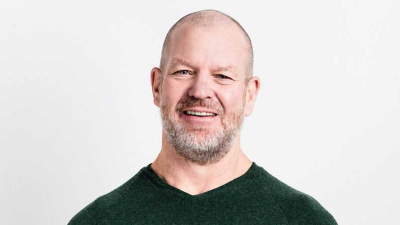

룰루레몬 창업자의
비하인드
요가복 하면 떠오르는 브랜드, 룰루레몬. 이 브랜드를 만든 사람은 어떤 인물일까요? 서핑 의류로 시작해 세계적인 스포츠웨어 제국을 세운 칩 윌슨, 그리고 그를 둘러싼 성공과 논란의 이야기입니다.
창업자 칩 윌슨
룰루레몬의 창업자 칩 윌슨(Chip Wilson)은 1955년 미국 샌디에이고에서 태어나 캐나다 캘거리에서 성장한 기업가입니다. 아버지는 아이스하키·풋볼 선수, 어머니는 체조 선수이자 수영장 구조요원이었죠. 이런 가정환경이 그의 운동에 대한 관심과 의류 산업 진출에 영향을 주었다고 합니다.
그는 1979년 서핑·스노보드 의류 회사 웨스트비치(Westbeach)를 세워 성공적으로 운영하다 1997년 매각했습니다. 열정적인 스포츠광이었지만 32살에 근위축증 진단을 받으면서 요가를 처음 접하게 됩니다.

커뮤니티 마케팅으로 크게 성장
요가 수업에 참여하며 요가복의 불편함을 느낀 그는, 이를 개선하려 1998년 기능성과 패션을 겸비한 요가복을 개발하며 룰루레몬을 창업합니다. 타깃 고객은 '연 10만 달러를 벌고 여행과 운동을 좋아하는 32세 전문직 싱글 여성'. 몸매가 드러나는 디자인과 요가 커뮤니티 지원을 앞세워 브랜드를 키웠습니다.
특히 눈에 띄는 건 커뮤니티 마케팅입니다. 나이키처럼 스포츠 스타를 내세우는 대신, 주변의 트레이너나 인플루언서 같은 '일반인'을 전면에 내세웠죠. 이 전략은 지금도 룰루레몬의 정체성이며, 많은 스포츠 브랜드가 벤치마킹하고 있습니다. (친한 동생이나 친구가 룰루레몬 광고에 나오는 걸 보면 신기하기도 합니다.)
여러 논란에 휘말리다
이후 룰루레몬은 '나이키의 대항마'라 불릴 만큼 성장했지만, 윌슨은 여러 차례 부적절한 발언으로 논란을 일으켰습니다. 2013년에는 레깅스가 얇아 속살이 비친다는 품질 논란이 일자 "일부 여성의 신체가 제품과 맞지 않는다"는 발언을 해 큰 비난을 받았고, 결국 회장직에서 물러났습니다.
브랜드 이름 자체에 얽힌 논란도 있습니다. 영미권 사람들이 '동아시아인은 R과 L 발음을 잘 구분하지 못한다'고 여기는데, 윌슨이 서핑 브랜드를 운영하며 일본인을 많이 접했고 일본인이 발음하기 어려운 L을 최대한 많이 넣어 '룰루레몬'이라는 이름을 지었다는 이야기입니다. 인종차별적 발상이라는 비판을 받는 대목이죠.
칩 윌슨의 현재
현재 윌슨은 CEO·이사회에서 물러났지만 룰루레몬 지분 약 8%를 보유한 개인 최대 주주로 남아 있으며, 순자산은 약 62억 달러에 달합니다. 자선 활동과 다양한 투자를 이어가고 있습니다.
- 칩 윌슨은 서핑 의류 사업가 출신으로, 요가복의 불편함을 개선해 1998년 룰루레몬을 창업했다.
- 스타 대신 일반인·인플루언서를 내세운 커뮤니티 마케팅으로 나이키의 대항마로 성장했다.
- 부적절한 발언과 브랜드명 논란으로 물러났지만, 여전히 최대 주주(순자산 약 62억 달러)다.
생각해보기 ▸ 한 인물의 '공(功)'과 '과(過)'가 뚜렷할 때, 우리는 그를 어떻게 평가해야 할까요? 브랜드의 성공과 창업자의 언행은 분리해서 봐야 할까요?